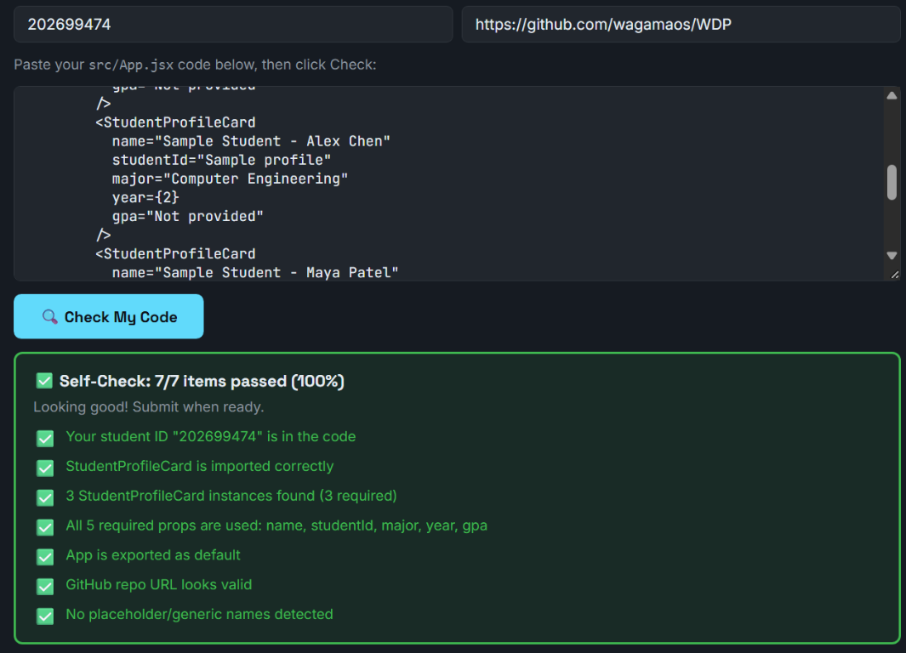

Week 11 · Student profile card
Submission Check
The screenshot below records the successful code check for the StudentProfileCard assignment.
9474-BBB-9881

Week 11 · Student profile card
The screenshot below records the successful code check for the StudentProfileCard assignment.
